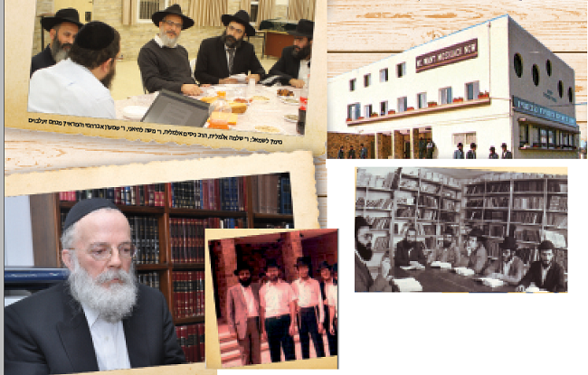

שלום דובער הלוי וולפא
בימים אלה, כאשר פעילים ואנשי חינוך מכתתים רגליהם כדי לצרף עוד ועוד ילדים לחינוך חב”די על טהרת הקודש, כינס “בית משיח” קבוצה מייצגת של אברכים מאנ”ש שמספרים בנוסטלגיה על ביקורי הבית של הגה”ח הרב שלום דובער הלוי וולפא בבתי הוריהם, במהלכם רשם אותם ואת משפחתם למוסדות חינוך חב”דיים. לימים הקימו עשרות ילדים
בימים אלה, כאשר פעילים ואנשי חינוך מכתתים רגליהם כדי לצרף עוד ועוד ילדים לחינוך חב”די על טהרת הקודש, כינס “בית משיח” קבוצה מייצגת של אברכים מאנ”ש שמספרים בנוסטלגיה על ביקורי הבית של הגה”ח הרב שלום דובער הלוי וולפא בבתי הוריהם, במהלכם רשם אותם ואת משפחתם למוסדות חינוך חב”דיים. לימים הקימו עשרות ילדים וילדות אלו משפחות חב”דיות לתפארת >> בהזדמנות זו חגגו המשתתפים את יום הולדתו ה-70 של “אבינו הרוחני”, כפי שהם קוראים לו >> מרתק

“נישואי הילדים שלנו עם משפחות חב”דיות, הם פירות ופירי–פירות של הרב וולפא”, אומרים שניהם. “זכינו לחתן ילדים בחתונות חסידיות, וזהו דבר שכלל לא מובן מאליו. אילולא הרב וולפא, לא היינו נמצאים במקום הזה”, הם אומרים בסיפוק.
מפגש נוסטלגי מחמם–לב
זה קרה בערב של יום שלישי האחרון, במהלכו התכנסו כמה אברכים מאנ”ש לקראת יום הולדתו ה–70 של הרב וולפא, לאורך ימים ושנים טובות שחל בימים אלה.
האברכים שנפגשו במסגרת כתבה זו, היוו הוכחה חיה על כוח ההשפעה של ביקור בית, אפילו בודד, וכורח השעה לרשום כמה שיותר ילדים לבתי ספר חב”ד. היו אלו נציגים בודדים של משפחות חסידיות יפות שקמו בזכות ביקורי בית שערך הרב וולפא לפני שלושים וארבעים שנה בעיר קרית גת.
כבר בשנים ההן התנוססו בקרית גת מוסדות חינוך חב”דיים לתפארת, החל מגני ילדים, ממשיך בבתי ספר חב”ד לבנים ולבנות (בנפרד), וממשיך במתיבתא, ישיבה קטנה וגדולה שמיזגו בתוכן בחורים מבתים חב”דיים מכל רחבי הארץ, לצד בחורים ‘קרית–גתיים’ שהתקרבו לחב”ד במסלול החינוך החסידי שליווה אותם לאורך השנים.
קרית גת באותן שנים, הייתה הרבה יותר קטנה מכפי שהיא כיום. כולם הכירו את כולם. לתושבים היו ‘קודים’ מוסכמים שרק הם הכירו. “שתים–עשרה החנויות”, “שבע קומות”, “הקוביה”, ועוד שלל כינויים שהיו סימני מקום מוסכמים. כמעט משפחה.
זו הסיבה שהתכנסותם של האברכים החב”דיים בשבוע שעבר, בבית כנסת חב”ד הוותיק (ויישר כוח לגבאי המסור ר’ גרשון לוין שי’ על האירוח הלבבי) הייתה באווירה משפחתית, רוויית נוסטלגיה.
התכנסו אפוא האברכים היקרים: ר’ משה לחיאני, ר’ שמעון אברהמי, ר’ יוסף ונונו, הרב ניסים אלמליח המכהן כרב רשות שדות התעופה, ואחיו ר’ שלמה, איש איש לפי כבודו ומעלתו. זו הייתה התוועדות חסידית עם הרבה זכרונות.
דמותו האבהית של הרב וולפא
את ההתוועדות החמימה פתח ר’ שמעון אברהמי. הוא למד בילדותו בבית ספר (מקצועי) “מרכז הנוער”. באחד הימים הגיע מדריכו שלום אסרף אל הרב וולפא, ואמר לו שיש אצלם נער עדין נפש שנראה בעליל שאינו מתאים למוסד. הרב וולפא הלך אל בית הוריו והפציר באביו שיעבירו לישיבה. האב סירב, אך הרב וולפא התעקש, ולאחר כמה ביקורי בית נוספים, הסכים. מיד עם היכנסו לישיבה, התבלט שמעון בהתמדה לא–רגילה ובתפילה מעומק הלב. לימים התחתן (עם גב’ טלי, המפיקה הצגות חינוכיות לנשים ובנות) והיה למורה ומחנך בחדר. כיום הוא מנהל בית חסידי לתפארת.
“עד היום עומד לנגד עיני היום הראשון בו הגעתי לישיבה בשנת תשמ”ב”, פותח הרב אברהמי. “אני זוכר את האווירה הנעימה, ובעיקר את הרב וולפא שתמיד הקרין שלווה חסידית והופעה מרשימה. כשהיה רואה תלמידים חדשים, היה מתעניין בשלומם ומעניק להם הרגשה טובה.
“אני זוכר את דמותו של הרב וולפא מתחת לטלית, מתפלל ב’עבודה’ ב’זאל’. לעתים גם היה מתוועד עם הבחורים ומדבר הרבה על עבודת התפילה. ההתוועדויות שלו היו מתובלות בסיפורי חסידים המושכים את הלב. כמעט בכל שבת היה חוזר מאמר דא”ח ברעווא דרעווין”.
עד היום נזכר אברהמי ברגש רב ביחס המיוחד שהרב וולפא העניק לו. מדובר בקשר שגם ברבות השנים רישומו לא נמחה. “בשנה הראשונה שלי בישיבה, התקיימה הגרלה על כרטיס טיסה לרבי. בכל שנה בח”י אלול התקיימה התוועדות רבתי אליה הוזמנו תושבי העיר. ההגרלה התקיימה בסוף ההתוועדות, והמתח לקראתה היה גדול.
“הייתי אז תלמיד בישיבה, בן 14, למדתי יפה, וכולם משום–מה הרגישו שאני אזכה, עד ש’השתכנעתי’ בכך גם בעצמי… אך לא כך רצה ה’, ותלמיד אחר, יצחק כהן, זכה בכרטיס. כגודל הציפיה כך גודל האכזבה. לקחתי את זה ללב בצורה קשה.
“הרב וולפא, למרות שניהל חצי עיר, הרגיש בצער שלי. הוא ניגש אלי לאחר מכן והבטיח לי כרטיס טיסה ‘בתנאי שאף אחד לא יידע מכך’… כך נסענו שנינו, יצחק כהן ואני, לרבי לחודש תשרי תשמ”ג. התשרי הזה עד היום חקוק לי בראש…
“היחס שלו היה אבהי. פעם מישהו תרם סכום כסף הגון כדי לקנות לבחורים נעליים חדשות. בשנה לאחר מכן הייתי בטוח ששוב נקבל נעליים חדשות, ושאלתי על כך את אֵם–הבית. היא ביררה על כך אצל הרב וולפא. התברר שבשנה זו הקניה כבר לא תחזור על עצמה, אבל הוא נתן אישור מיוחד לקנות לי זוג נעליים חדשות. כילד צעיר זה מאד השפיע עלי”.
מסתבר שכניסתו של אברהמי לישיבת חב”ד, שינתה לא רק את מסלול חייו, אלא השפיעה על הבית כולו. “האחים והאחיות - ואנחנו תשעה ילדים - כולם שומרי מצוות”, הוא מספר, “הקימו משפחות לתפארת. האחיות עם כיסוי ראש מלא, וגם האחים שומרים תורה ומצוות, והכל בזכות אותם ביקורי בית”.
מהמפד”ל לחב”ד
כשר’ משה לחיאני שמע את הסיפור על ההגרלה לנסיעה לרבי, הוא חייך חיוך רחב. גם לו יש סיפור בעניין, סיפור–חיים שלימד אותו הרבה: “הרב וולפא ארגן בכל שנה הגרלה לנסיעה לרבי, בו נציג מטעם הקהילה היה טס לרבי. שנה אחת קיבלתי ממנו טלפון: ‘משה, לא השתתפת בהגרלה’. זה היה שעה קלה לפני ההגרלה. אמרתי לו ‘תרשום אותי ואשלם לך לאחר מכן’. ובכן, אני הוא שזכיתי בהגרלה…
“לאחר מכן פגש אותי ואמר: ‘לא שילמת, אבל זכית’. הוא נתן לי את הסכום שהצטבר, והורה לי להוסיף את הסכום שטרם שילמתי בעצמי”.
אביו של ר’ משה היה אחת הדמויות הבולטות בקרית גת בשנים ההן. הוא כיהן כראש המעצה הדתית, ראש המפד”ל בעיר ומנהל סניף בנק המזרחי (חתיכת מעמד באותן שנים…). את הבנים שלו, כמובן, שלח למוסדות החינוך של המפד”ל.
“הרב וולפא הגה רעיון מבריק”, נזכר ר’ משה לחיאני. “את תלמידי כתות ו’ בבית ספר חב”ד, העביר ללמוד בבניין הישיבה, וקרא לזה ‘מתיבתא’, כהכנה לישיבה קטנה. התלמידים שהגיעו ברובם מבתים לא חב”דיים, חיו ונשמו ישיבה כבר בגיל הזה. לאחר בר המצווה, כמעט כולם המשיכו אוטומטית לחיי ישיבה מלאים. בזכות היוזמה הזאת נוספו כתות שלמות בישיבה. אני יכול למנות רשימה ארוכה של אברכים מאנ”ש, בעלי משפחות ברוכות, שהגיעו לחיי חסידות בזכות היוזמה המקורית הזאת”.
כשלחיאני סיים כתה ח’, אביו רצה לשלוח אותו לבית ספר למלאכה. כילד צעיר, לא העז להפר את רצון הוריו למרות שרצה להמשיך במסלול הישיבתי עם שאר חבריו לכתה. “לא היה לי את הכוח להתנגד להורים”, הוא נזכר. הוא ניגש אל הרב וולפא שאמר לו “אני אבוא אליכם הביתה לדבר עם ההורים, אתה רק תשב בשקט”.
“אני זוכר עד היום את הערב בו הגיע אלינו הביתה והתיישב עם אבא ואמא בסלון. הוא פתח ואמר ‘הבן שלכם מצליח בלימודיו ב”ה, הוא מתאים לישיבה, אל תיקחו אותו. הוא יגדל אצלנו חסיד ירא שמים ולמדן. אנחנו רוצים אותו בישיבה’. אבא שלי שאל: ‘ומה יהיה עם עבודה? ממה הוא יתפרנס?’ הרב וולפא בברייטקייט האופייני שלו אמר: ‘פרנסה עלי. הוא יעבוד איתי בישיבה’.
“אמא השתכנעה מיד ואמרה לאבא ‘בור ששתית ממנו, אל תזרוק בו אבן. אל תוציא את הילד מהישיבה’, ואבא השתכנע. זה היה הכוח של הרב וולפא, ומאז אני בחב”ד.
“הרב וולפא אמנם התכוון להרגיע את אבי בהבטיחו שאעבוד אצלו בישיבה, אולם כך אכן אירע, כמו נבואה נזרקה מפיו. במשך כל השנים אני עובד בישיבה ומתפרנס ממנה בכבוד ב”ה…”.
ברבות השנים הודה האב כמה פעמים באוזניו של הרב וולפא, כי מבנו משה יש לו הכי הרבה נחת… זאת מלבד העובדה שגם ילדים נוספים התקרבו בזכותו לחב”ד.
ר’ משה לחיאני מתרגש כשהוא מדבר על הרב וולפא “בשבילי הוא כמו אבא רוחני; הוא השגיח עלי בשבע עיניים למרות כל עיסוקיו הרבים. בימי החופש הוא לא רצה שאסתובב בשכונת המגורים שלנו, בחוסר מעש, והציע לי לבוא לעזור לו בעבודה במשרד ובבית. במיוחד אני זוכר שהייתי מגיע אליו מדי שנה לנקות את הספרים לפני פסח. זו לא הייתה מלאכה פשוטה נוכח העובדה שהיה לו חדר גדול שכל ארבע קירותיו מצופים בספרים מלמטה עד למעלה. הייתי עובד מבוקר ועד ערב כדי לסדר את הספרים. במבט לאחור, אני חושב שהרגשתי אז מוגן בימי החופש, וזאת בנוסף לתשלום היפה שקיבלתי…
“הייתי פותח ספר אחר ספר, מנער ומנקה. אני זוכר שכל ספר שפתחתי, חדש כישן, הייתי רואה מדי כמה דפים, סימון בדף. הייתי נער צעיר אבל העזתי ושאלתי ‘הרב וולפא, האם למדת כאן את כל הדפים?’ הוא אמר לי בחצי חיוך: ‘מה נראה לך? שאני פותח ספרים ועושה סתם סימניות?!’… פעם אמר לי ‘כל ספר חדש שנכנס לבית, לא נכנס לספריה עד שאני מעלעל בו לפחות’”…
המשפחה כולה עברה לחב”ד
מפגש התלמידים שנערך ביום שלישי שעבר, היה מרגש עבורי, כותב השורות, באופן אישי. כתלמיד לשעבר בישיבת ‘תומכי תמימים’ בקרית גת, זכיתי לחוות שעות נעימות עם חבריי, עמם חלקתי בעבר ספסל לימודים, כסא בחדר האוכל ואף חדר בפנימייה. חיים שלמים.
ר’ יוסף ונונו, אברך ממשפחת אנ”ש בקרית גת, הוא סיפור בפני עצמו. אמנם במקור הוא ‘אשקלוני’, אך עם חתונתו נכנס למשפחת וקנין מקרית גת, לה חמש בנות - כולן הקימו משפחות חסידיות לתפארת בזכות פועלו של הרב וולפא. “כל המשפחות הללו התקרבו לחב”ד בזכות ביקור הבית שבו לקח הרב וולפא את הבת הגדולה, פאני, והביא אותה ללמוד בבית ספר חב”ד”.
הגב’ פאני (רעייתו של הרב שמעון ועקנין מלוד), אז תלמידה מצטיינת בבית ספר ‘משואה’, ממ”ד בקרית גת. הוריה רצו שהיא תמשיך במוסד בסגנון ממלכתי–דתי. “ואז הרב וולפא הגיע לביתו של חמי, ר’ ברוך וקנין, ושכנע אותו שהבת תמשיך את לימודיה ב’בית רבקה’ (באותן שנים היתה חטיבת ביניים עם פנימיה במסגרת ‘בית רבקה’). למען האמת, זו הייתה בקשה מופרכת, ואפילו הזויה נוכח מה שנדרש ממנה להקריב. זה דרש ממנה שינוי עצום בסגנון חייה, סגנון הלבוש, וגם לעזוב את הבית החם ולעבור לחיי פנימייה. אף על פי כן, ההורים הסכימו והיא עברה ללמוד ב’בית רבקה’ בכפר חב”ד, ובעקבותיה גם אחותה. עם השנים, כל חמש הבנות במשפחה (וביניהן, נשותיהם של האברכים גיא מלכה, אבי טולידאנו), הקימו בתים חב”דיים. גם הבן מוטי וקנין למד כל השנים ב’תומכי תמימים’.
“השבוע השאתי את בני הבכור - אומר ר’ יוסף ונונו בנחת חסידי - והוא בהחלט ה’פירי–פירות’ של הרב וולפא”.
כדי להשלים את התמונה, ביקשתי לשמוע את סיפורה של הגב’ וקנין, האֵם, כפי שהיא רואה מזווית ראייתה את אירועי אותם ימים בהם הרב וולפא, “האבא הרוחני שלנו”, היה הולך מבית לבית לרשום נערים ונערות למוסדות חב”ד.
“בהתחלה רשמנו את הבנות לתיכונים במושב ‘חזון יחזקאל’. רכב ההסעות הגיע לקחתן לתיכון, אך פתאום הרב וולפא הגיע ועצר את הבנות - ‘אתן לא נוסעות לתיכון!’ אמר והוריד אותן מההסעה… “יש בקרית מלאכי תיכון לבנות של הרבי, ושם אתן תלמדו’, פסק”.
גב’ וקנין זוכרת היטב את היום בו הגיעו ממרוקו לארץ ישראל והתיישבו בקרית גת. בהתחלה שוכנו בצריף עלוב, ואחר כך עברו לדירה קטנה בת 48 מ”ר, חדר אחד וסלון, בה נאלצו להשתכן שמונה נפשות!
ואז הגיע הרב וולפא לביקור בית כדי לרשום את הילדים למוסדות חב”ד. “הוא הסתכל סביב והתפלא ‘כך אתם גרים?’ נדהם. ‘בדירה כל כך קטנה?’ הוא כתב מכתב לעמידר. לא חלף זמן רב, והחברה העבירה אותנו לדירה גדולה יותר”, היא מספרת.
“כשפאני נרשמה בגיל 12 ל’בית רבקה’ בכפר חב”ד. קרובי משפחה ושכנות התפלאו: איך את שולחת ילדה לפנימייה בגיל כזה צעיר?! אבל אני אמרתי להן: החינוך של הבת שלי יותר חשוב!”
יכולת לדבר עם כל האוכלוסיות
החתן החמישי של משפחת וקנין, ר’ יוסף ונונו עצמו גדל במשפחה שאינה חב”דית, תושבי אשקלון. הוא בכלל היה אמור להמשיך את לימודיו בישיבה בבני ברק. “אבי ודודי השתתפו בשיעור תניא שהרב וולפא היה מוסר בביתו של הרב פיזם בשדרות מדי חמישי בלילה, וכך התקרבו לרבי. אחר כך, גם בזכות השפעתו של השליח באשקלון הרב מנחם מענדל ליברמן, הסכימו הוריי לשלוח אותי לישיבת חב”ד בקרית גת.
“אני זוכר שבאנו לבדוק את הישיבה. אמא אהבה את הישיבה ממבט ראשון. היא ראתה ישיבה בדיוק כמו שחלמה - מקום מואר, פרחים בחדרי הפנימיה, כיסויי מיטה נאים, ו..אנשים מחייכים… שמונה שנים למדתי במוסדות חב”ד בקרית גת, ומאז אני בחב”ד”, אומר ונונו בחיוך האופייני לו.
לר’ יוסף ונונו היה קשר אמיץ עם בנו של הרב וולפא, ר’ זליג. במסגרת חברותם היה מגיע תדיר לבקר בבית משפחת וולפא. “כשנכנסת לבית, תקפה אותך יראת כבוד”, הוא נזכר. “אני לא יודע אם בגלל אלפי הספרים שכיסו את קירות הבית, או בגלל אישיותו של הרב וולפא. היו שבתות שהיינו מגיעים אל הרב וולפא הביתה בשעת ‘רעווא דרעווין’ לנגן אצלו ניגונים. זו הייתה אווירה מיוחדת שעד היום ספוגה בי”.
לא רק ר’ יוסף ונונו התקרב לחב”ד, אלא גם שני אחיו, שמעון ודן, הלכו בעקבותיו ולמדו במוסדות החב”דיים בקרית גת, “שניהם עומדים עד היום בקשר חזק עם השלוחים במקומות מגוריהם”.
החותם שהוטבע בנפשו של ונונו, הוא לא מלימודיו בישיבה, אלא גם מעצם אישיותו של הרב וולפא. “מצד אחד הוא היה עבורנו דמות אגדית ביכולת הלימוד שלו; מצד שני - תמיד היה עסוק בעסקנות ציבורית, הן בגני הילדים והן במוסדות החינוך. הייתה לו חיות מיוחדת בכל הקשור לתנוקות של בית רבן. הוא ידע לרדת לרמה שלהם ולדבר בשפתם”.
משתתפי ההתוועדות כולם מהנהנים בראשם בהסכמה. “הרב וולפא ידע לדבר עם כל קבוצה בשפה שלה”, אומר ר’ שמעון אברהמי. “הוא התאים את עצמו לספרדים, לחסידים, לליטאים, ללמדנים, ל’משכילים’. לכל פלח אוכלוסיה הייתה לו שפה מתאימה”.
הגב’ וקנין לא יכולה שלא להיזכר ביחס המיוחד שהרב וולפא העניק להם: “לאורך השנים הוא לא שכח אף אחת מהבנות, והשתתף בשמחות של כולן. לא אשכח איך רקד בכל כוחו בחתונה של בתנו הגדולה, כאשר אל החתונה הגיע היישר משירות מילואים כשהוא עם מדי צבא”…
הצלם שהגיע להנציח את הערב המרגש, שניאור ממו, בין צילום לצילום, יושב גם הוא מרותק לשיחה. הוא הכיר את הרב וולפא גם בזכות חמיו ר’ יצחק אייזיק ינקוביץ ז”ל שהיה בקשר הדוק עם הרב וולפא. “כשהרב וולפא עזב את קרית גת, היה בעיר כאב גדול”. הוא זוכר את זה היטב. “כל העיר דיברה על כך, ולא רק חסידי חב”ד. לכבוד הפרידה ערכו מסיבת פרידה מרשימה בחצר בית הכנסת, מאחר ובית הכנסת עצמו היה צר מהכיל את המשתתפים הרבים. אני זוכר שכשהוא היה הולך ברחוב, אנשים מכל גווני האוכלוסיה היו עוצרים ומדברים איתו”.
הדוגמה האישית השפיעה יותר מהכל
משפחת קריאף היא אחת המשפחות הוותיקות בקרית גת. הבן הרב אליהו, מכהן כיום כמשפיע לאנ”ש ולישיבת ‘תומכי תמימים’ בקריות. כבר לפני שנים ארוכות, כאשר אמו הגב’ לאה עבדה במטבח הישיבה, היה הרב וולפא אומר לה “יש לך יהלומים בבית!”…
ר’ אלי זוכר היטב כיצד התחיל הקשר, גם הוא מביקור בית שערך הרב וולפא בבית הוריו. ההורים, למרות שלא היו ממש דתיים, הסכימו להעביר את הילדים לחב”ד. בהתחלה נרשמו האחיות (כיום: אילנית חיון, השלוחים בקניון הזהב ראשל”צ, וסיגל קידר, שלוחים בקריות) ולאחר מכן אליהו הצעיר.
הקשר עם המשפחה לא הסתיים בביקורי בית, אלא המשיך בהזמנה להתוועדויות, לשיעורי תורה. בד בבד, גם הילדים הביאו את רוח בית הספר החב”די הביתה, והרוח החסידית החלו לחלחל ולהשפיע על בני הבית. “הושפענו מאוד מהדוגמה האישית, מהארת פנים ומהיחס האישי שהעניק הרב וולפא למשפחה”, נזכר ר’ אליהו. “מצד אחד היתה כלפיו יראת כבוד גדולה, ומצד שני - קשר של חביבות גדולה ועמוקה. בכל נושא שההורים מצאו לנכון, היו מדברים אתו בגובה העיניים, זאת לצד התקיפות שגילה בכל הקשור להתנהגות על פי הלכה ודקדוקיה. הוא לא ידע פשרות בעניין זה, וזה נחקק בנפש. בבית תמיד דיברנו על הרב בצורה מיוחדת”.
במקביל לקשר שנוצר בין בנות משפחת וולפא לבנות משפחת קריאף, ר’ אליהו התחזק מכנסים ומהתוועדויות שהתקיימו ביומא דפגרא השונים, כמו גם משיחות אישיות ששמע.
עד היום חקוק במוחו המבצע הגדול שנערך בבית הספר, כאשר הפרס הראשון היה - כרטיס טיסה לרבי. ההתרגשות הייתה עצומה. “רוב מוחלט של תלמידי בית הספר לא היו חב”דניקים, ומכל מקום, זה הכניס אותם חזק לאוירה של נסיעה לרבי וההכנות אליה. התלמידים כולם ליוו בהתרגשות רבה את הילד הזוכה בגורל שנסע עם הרב וולפא. כשהילד חזר, הוא כינס את כל התלמידים וסיפר את כל מהלך הנסיעה, על ההווי ב–770, ועל כך שעמד 7 שעות בהתוועדות של הרבי… זה השאיר רושם עצום על התלמידים, וחיזק את רגש ההתקשרות שלנו לרבי!” מספר ר’ אליהו.
“לאורך השנים, עוד מהתקופה בה למדתי במתיבתא, ולאחר מכן בישיבה, למדתי רבות ממסירות הנפש הגדולה של הרב להחזיק את הישיבה. גם בבית הכנסת ראינו בו דוגמה חיה בתפילות, בניגונים, בהקפדה לחזור בכל שבת מאמר בעל פה. באופן אישי, התרשמתי מאוד מכך שישב להכין את המאמר כל שבוע לפני שבת, למרות כל העומס שהיה מונח על ראשו. הדוגמה האישית שלו היא שהשפיעה עלינו יותר מהכל”.
הצלה של משפחה
האווירה במפגש הולכת ומתחממת, קרובה ונעימה יותר. הרבה שמות, כתובות ו’קודים’ שונים שרק המשתתפים מבינים, עולים על פני השטח. כמו גלגל הזמן סב על צירו 30 שנה לאחור.
אל המפגש שלנו מצטרפים הרב ניסים אלמליח, רב רשות שדות התעופה, ואחיו ר’ שלמה. שניהם פינו סדר יום עמוס כדי לספר על ההתקרבות שלהם לחב”ד. הרב ניסים מחויב למקום עבודתו ואינו רשאי להתראיין באופן רשמי, אבל אחיו שוזר את סיפור משפחתם ברגש רב, והזיכרונות צפים ועולים. הנוכחים, ואני עמם, נסחפים לימים של פעם…
משפחת אלמליח הגיעה מרקע לא פשוט. ההורים היו חרשים–אלמים. חלק מקרובי המשפחה עזבו את הדת בגלל חברים לא טובים, והילדים גדלו לתוך מציאות קשה.
הרב וולפא טרח ובא לביקור בית במשפחה. אחרי כמה ביקורים בהם הבת שושי תרגמה בינו לבין ההורים בשפת הסימנים, הסכימו ההורים להכניס את הילדים למוסדות החינוך החב”דיים. ביקורים אלו שינו את חייהם של כל שבעת הילדים בבית.
איך הצליח הרב וולפא, להתחבר בצורה כה חזקה ללבות התושבים?
ר’ שלמה אלמליח: “הוא הגיע בצורה בלתי אמצעית, הכי פשוטה ועממית, וכך כבש את הלבבות של כולם. הוא הרעיף אהבה על התושבים, דיבר איתם בדיבור מתוק ועם חיוך מיוחד - והם החזירו לו אהבה”.
ר’ שלמה למד במוסדות חב”ד כבר מתחילת בית הספר היסודי. “למען האמת, הייתי ילד מופרע… והיחיד שהצליח להשתלט עלי היה הרב וולפא”, הוא מספר בכנות ובגילוי לב.
כשהוא מתחיל לספר על המקרה הבא, ה’קרית–גתיים’ מתחילים לחייך. כולם זוכרים זאת היטב. “כשבנו את הישיבה, היה שם טרקטור, והייתי סקרן מאד לגביו. שאלתי את הנהג שאלות ‘תמימות’ לגבי תפעולו של הטרקטור, וכשהוא הלך לביתו בתום יום עבודה, כבר ידעתי איך להניע את המנוע והתחלתי לנסוע עמו ברחובות. היה אז נס גדול”, מסכם ר’ שלמה.
“הרב וולפא אמנם היה עסוק ברישום לישיבה, לקייטנות, לבתי הספר, אך מאחורי הקלעים ניהל את המוסדות כולם. הייתה לו יכולת להפעיל כמה פרויקטים בו–זמנית, ועם זאת, הייתה לו יכולת להיכנס לרזולוציה של פרטים קטנים.
“פעם עשיתי הצגה במסגרת הקייטנה”, אומר ר’ אלמליח, “כתבתי מערכון והראיתי לו את זה. הוא קרא בעיון ואמר לי שהסוף הוא טראגי (האמא בהצגה הייתה חולה ונפטרה) והציע שבמקום זאת, האמא תבריא, כי משיח צדקנו בא… בעיניי זו גדלות, לרדת עד לפרטים הקטנים מתוך תשומת לב”.
הנוכחים מזכירים, איך לא, את התהלוכות הגדולות באותן שנים שהיו בקרית גת, בהן אלפי ילדים היו צועדים בסך ברחוב מלכי ישראל, כאשר הרב וולפא מנצח על המלאכה. כל קרית גת הייתה משותקת באותן שעות.
הנוכחים נזכרים גם ברכב שלו שהיה מסתובב ברחובות העיר ומכריז על זמן הדלקת נרות שבת. הוא גם היה מהחלוצים שקנה מכשיר של צפירה, אותו היה מפעיל מביתו בשעת הדלקת נרות שבת. “היום יש את זה בכל עיר כמעט, אבל באותן שנים זה היה חידוש עצום”.
ר’ אלמליח: “אין ספק שהרב וולפא פרץ דרך, במובן החיובי כמובן, בהרבה מאד מובנים. הוא ניחן באומץ לב בלתי רגיל. אני חושב שאם הוא היה משתמש עם האומץ הזה בעולם העסקים, הוא היה עשיר גדול”.
הוא למעשה אימץ את המשפחה שלכם?
“בהחלט. הוא סייע מאד למשפחתנו וליווה אותה לאורך שנים. היו גם שנים של שפל כלכלי, והוא תמך בנו מאד”.
שתיקה נופלת. שני האחים יושבים מהורהרים. לבסוף הם ממליצים לי לפנות אל אחותם הגדולה. “היא יודעת הרבה יותר טוב מאתנו עד כמה הרב וולפא תרם למשפחה שלנו”, הם אומרים.
אחותם, הגב’ שושי בן שטרית, היא דמות מוכרת בקרית גת, מדריכת כלות, ובהשגחה פרטית מופלאה, משרדה במועצה הדתית הוא בדיוק המשרד בו ישב סבה, הגאון הרב מרדכי אלמליח, שכיהן כרבה הספרדי של קרית גת. “הרב וולפא הגיע כמה פעמים לבית הוריי, ואני כילדה עזרתי לו לתקשר עם ההורים שהיו חרשים–אילמים. בעקבות ביקוריו, עברנו ללמוד בחב”ד.
“אני עצמי הייתי באה לבית משפחת וולפא בערב שבת כדי לראות מה זה שולחן שבת (שולחן השבת אצלנו בבית מזכיר לי כל שבוע את שולחן השבת של משפחת וולפא). כל הזכויות של הבית החב”די שלי, שמורות לו. כשהגעתי לכתה ט’, הוא הכניס אותי ואת אחותי יהודית ללמוד ב’בית רבקה’. בהמשך הכנסתי את האחים שלומי וניסים לישיבה. הרב וולפא ליווה אותי כל השנים; כך למשל כשהגיע זמן לקבל הצעות שידוכים, הוא בירר עבורי על אודות החתן… גם כעבור שנים רבות מחתונתי, המשיך ללוות אותנו בעת הצורך. כשהייתי לפני 26 שנה עם מוריה בתי לפני ניתוח לב, הוא ליווה אותנו לאורך כל הדרך עד להחלמתה. הרגשתי ילדה שלו ושל הרבנית”.
מה המיוחד בו?
“אצילות הנפש שלו, יראת השמים והמידות טובות… דמות חסידית אמיתית של הרבי, דוגמה חיה של אהבת ישראל, מודל לחיקוי ולדוגמה!
“ההרגשה שהוא נתן הייתה כל כך אמתית ובונה. זכורני שפעם ילדיי השתתפו בהתוועדות הגדולה של י”ט כסלו. בשלב מסוים הרב וולפא אמר לרב דרמר זצ”ל, הרב האשכנזי: ‘אתה רואה את אלו - והצביע עליהם - אלו הנינים של הרב מרדכי אלמליח!’ הילדים חזרו הביתה בהתרגשות רבה. הוא הדגיש להם שיש להם ייחוס, הוא הקצין את זה, כיבד - וזה נתן לנו המון.
“מעולם לא הרגשתי אליו זרה; אם הייתי צריכה משהו, היה כמו אבא רוחני שלי. אם הייתי אומרת להורים שאני הולכת לשאול את הרב וולפא, הם היו אומרים תמיד: ‘הרב וולפא, קודש קדשים!’ בשבילנו היה תמיד את הרבי ואת השליח שלו הרב וולפא”.
“התולדות הרוחניים של הרב וולפא”
לקראת סיום הפגישה, מבקש ר’ אלמליח לספר על התוועדות אחת של הרב וולפא שנחרתה במוחו באופן מיוחד. זו הייתה התוועדות מרגשת עם תלמידי הישיבה בנסיבות מיוחדות. “אני זוכר היטב שהוא אמר, בין השאר, כמה צריך להטמיע בבחורים את הרצון ואת השאיפה לגדול בתורה ולהיות למדנים.
“אחרי כל העסקנות המסועפת שלו, הניהול המאסיבי - ידענו תמיד שלימוד תורה, היא–היא המהות האמיתית שלו, מה שאפשר לראות היום בפרויקט המפואר והמונומנטלי של ‘הרמב”ם השלם’, עליו הוא מנצח”.
ר’ אליהו קריאף בוחר לסיים את השיחה עמו במילים נרגשות: “פעמים רבות אני מדבר על ‘אלה תולדות’ - כל אחד צריך לדעת שהוא תולדות של מישהו. אנחנו התולדות של הרב וולפא ומשפחתו. באנו מבית לא דתי, ובזכות ביקורי הבית שלו, ההורים וכל המשפחה שלנו הינם חסידים בכל מובן המילה; שתי אחיותיי הינן שלוחות, האחת בקריות והאחרת בראשל”צ, ואני מכהן כמשפיע בישיבה בקריות.
“על משפחתנו - כמו עוד משפחות רבות - יכול הרב וולפא לומר ראו גידולים שגידלתי… אנחנו, הילדים שלנו והנכדים… כולם שלו”.
‘אבנים’ בונות בתים
לקראת פרסום הכתבה, שהיתה אמורה להיות הפתעה, טלפנו אל הרב וולפא, המתגורר היום בביתר עילית, ושאלנו אותו אם הוא זוכר את אותה התקופה ההיא בה התרוצץ מבית לבית, ממשרד למשרד, ו’עשה נפשות’ לה’, לתורתו ולחסידות.
מסתבר שהאירועים ההם, לפני שלושים–ארבעים שנה, בהירים היטב בזכרונו. ראשית מבקש הרב וולפא להדגיש את חלקה של רעייתו תחי’, שבשעה שהוא הסתובב בביקורי–בית בשליחות הרבי, היא נשארה לבדה בלילות מטופלת בילדים הרכים, מחנכת אותם לחסידות ויראת שמים. “הרגשתי בזה את מימוש דברי הרבי ביחידות שלפני החתונה: “אז איהר וועט מאכען ליכטיק ארום זיך, וועט דער אויבערשטער מאכען ליכטיק בא אייך” [כאשר תפיצו אור מסביבכם, יאיר הקב”ה גם בביתכם].
בהמשך, הוא בוחר לדבר על המהות: “העיקר הוא לדעת, שכאשר הולכים בשליחותו של הרבי מלך המשיח, צריך להאמין שאפילו פעולה קטנה ביכולתה לגרום למהפכה ממש בנפשו של יהודי ולהשפיע עליו לדורי דורות”.
הרב וולפא מוסיף בהתרגשות: “לפני 50 שנה, כאשר הייתי ‘תמים’ בישיבה בכפר חב”ד, נסעתי בכל שבוע למסור שיעור תניא במדרשיית ‘נועם’ בפרדס חנה. היה שם תלמיד נחמד בשם אלישע אבני. בשלב מסוים נסעתי לרבי, התחתנתי ושכחתי מהשיעור ומהתלמידים.
“שלושים שנה לאחר מכן, ואני מרצה בסמינר “בית רבקה”, בתחילת השנה הקראתי מהיומן את שמות התלמידות בכיתה. והנה אני רואה תלמידה ששם משפחתה הוא שם נדיר, “אבני”. פתאום הבזיקו בי הזכרונות ממדרשית נועם. לא התאפקתי ושאלתי את התלמידה לשם אביה. היא ענתה “אלישע” והוסיפה: “אנחנו שלוחים בישוב מבוא חורון”. התרגשתי מאד לראות את התוצאות משעורי התניא ההם…
“עברו עוד 20 שנה, והנכד שלי הת’ חיים דוד וילהלם מבנגקוק, הלומד כיום בקרית גת, מגיע אלינו הביתה לשבת. התעניינתי בלימודיו ושאלתי לשם המשפיע שלו, והוא עונה: ‘הרב אבני’. מסתבר שאביו ר’ אלישע ז”ל נפטר, והוא ממלא את מקום אביו בשליחות במבוא חורון. הצטערתי לשמוע מפטירת האבא, אבל ב”ה יש המשך לשליחות…
“בשבת הבאה מגיעה נכדתי, חני וילהלם מבנגקוק, המשמשת כמדריכה בסמינר בצפת, ואני מתעניין: ‘יש לך חברות טובות בסמינר?’ היא השיבה בחיוב: “כן, יש לי חברה טובה בשם אבני ממבוא חורון’…
“זוהי כוחה של פעולה אחת בשליחותו של הרבי מלך המשיח”
נפשות אני עשיתי
קשה שלא להתרגש מזיכרונותיה של הגב’ עליזה, לבית משפחת בן–זקן, זיכרונות שמלווים אותה מאז תקופת ילדותה המוקדמת:
“הייתי תלמידה בכתה ב’ כאשר המורה דבורה אמיתי (איזגווי) הגיעה לביקור בית אצלנו בשליחות הרב וולפא. אמא סיפרה שיש לה בת (זהבה) שמסיימת כתה ח’ בחזון יחזקאל. המורה שאלה את אמא: ‘מדוע שלא תעבור ללמוד בבית רבקה בכפר חב”ד?’ היא אכן היתה הנחשונית ממשפחתנו שהחלה ללמוד שם.
הרב וולפא הגיע הביתה להוריי, והתעקש שגם שתי אחיותיי הצעירות, אסנת ואירית, יעברו מחזון יחזקאל ללמוד בחב”ד, וכך היה. הרב וולפא העצים אותן מאד. הן היו חוזרות הביתה מאושרות, שכן הוא ידע לתת להן הרגשה שהן חשובות ואין מלבדן… ידע לרדת אליהן ולהתייחס כמו אבא לבנותיו.
בכלל, הוא היה מורה דרך בתחנות מאוד משמעותיות בחיי. כך למשל, כשסיימתי ללמוד שנה ג’ בסמינר, הגעתי לקרית גת והייתי צריכה להתחיל לעבוד כמורה. מצאתי משרת הוראה רק בבית ספר ממלכתי דתי. התייעצתי עם הרב וולפא, והוא הדריך אותי מה ואיך לפעול במסגרת הכתות. לאחר מכן דיווחתי על כך לרבי וביקשתי את ברכתו הקדושה. באותו יום קיבלתי טלפון. מזכירו של הרבי התקשר ומסר את תשובת הרבי: ‘אזכיר על הציון’.
בהתחלה לא ידעתי מה משמעות התשובה הזו, עד שראיתי בספר של הרב וולפא, ש’אזכיר על הציון’ אין זו ברכה רגילה, אלא ברכה עוצמתית! הרבי צם ביום זה, הולך לאוהל, קורא את המכתב שלך עם עוד אלפי מכתבים מול הציון של הרבי הריי”צ. זו טרחה גדולה מצד הרבי לפנות זמן לנשמה היהודית שכתבה לו.
אני זוכרת שכשקיבלתי משרת חינוך, הייתי נבוכה. זה היה לפני החגים, ומאד רציתי לנסוע לרבי לחודש תשרי ואף להישאר שם. שוב פניתי אל הרב וולפא והוא הבין בדיוק מה ההרגשה שלי. הוא אמר: ‘אל תעזבי את עבודת החינוך, אבל את כן צריכה לנסוע לרבי!’ ואכן, נסעתי לרבי. שם, בעידודו של הרב וולפא, הציעו לי שידוך. חיכיתי עד שהבחור הגיע לארץ ישראל ולאחר שבועיים וחצי השתדכנו.
הוא הגיע לווארט שלנו, לחתונה, לשבע ברכות. גם לאחר החתונה, הרב וולפא העניק לנו יחס אישי ודאגה לא מצויה, כמו היינו, בעלי ואני, בנים יחידים שלו. הוא ידע בדיוק מה עומד על הפרק, וידע לסייע בכל עת מצוא. כשעברנו לגור בקרית גת, המשיך להתעניין בנו. לאחר שנולד בני השלישי, הוא התעניין איפה ה’שלום זכר’, הגיע, כיבד, ישב והתוועד. לאורך כל הדרך נתן לנו להרגיש מכובדים. זו הייתה הגאונות הפשוטה שלו, לבוא לכל אחד…
בשלב מסוים כתבתי לרבי מכתב, והתשובה הייתה שעלי לעבוד בחינוך על טהרת הקודש. לא הבנתי את התשובה, הרי אני עובדת בממ”ד על פי ברכה של הרבי! שאלתי את הרב וולפא על כך, והוא ענה לי: ‘עם מכתב של הרבי לא מתווכחים!’ כנראה שהרבי רוצה שתעבדי במקום עם הפרדה מלאה! לא מספיק שאת מושיבה את הבנים והבנות בכתה באופן נפרד. צריך לחפש מקום נפרד לגמרי!
במשך תקופה חיפשתי אפשרויות אחרות, אך לא מצאתי.
יום בהיר אחד, בית הספר שבו לימדתי, רמב”ם, הפך להיות נפרד, והחל להיקרא ‘תלמוד תורה ממ”ד’. ממש ‘מופת’. כך זכיתי לקיים את ההוראה של הרבי. הרב וולפא הפנים בי את הידיעה שלא לשחק עם המכתבים של הרבי: ‘כזה ראה וקדש!’
אמא שלי, היתה טבחית בישיבה, הוא היה אומר לה תמיד: ‘הבנות שלך יתחתנו עם חתנים טובים!’ והיא היתה חוזרת הביתה קורנת מאושר!…
• • •
אחותה של עליזה, הגב’ אירית אלזם, גם היא זוכרת היטב את השפעתו של הרב וולפא על משפחתה. “הרב וולפא הגיע לגיסי מאיר מלכה, ואמר לו בתמיהה: ‘איך זה שהגיסות שלך לא בחב”ד עדיין?’ לא היה צריך לשכנע הרבה והסכמנו להגיע לבדוק את בית הספר.
הרב וולפא ערך לנו כזו קבלת פנים מרגשת, שלא היה לנו ספק שאנחנו נשארות! הוא נכנס לכיתה, הצביע עלי ואמר: ‘את, בן זקן! איזה אור גדול הגיע לבית הספר שלנו! את הבת של אברהם בן זקן!’… הרגשתי מיוחדת… אותו דבר אמר לאחותי, אסנת…
הוא גם דאג לאחיותיי למצוא שידוכים. אחותי עליזה היתה בסטאז’ כמורה בבית הספר, רווקה כבת 21. הרב וולפא הציע לה להיפגש עם ‘בחור חסידי מיוחד במינו’, והוסיף: ‘תעשי שמיניות באוויר להיפגש אתו’ - זהו מוטי גבאי, בעלה כיום… גם לאחותי הנוספת, אסנת, הוא שידך לה את ר’ מענדי אלחרר, בעלה כיום.
הרב וולפא היה מסור לתלמידי בית הספר. כשמורה היתה חסרה, פעמים רבות שהוא היה מלמד במקומה. תמיד הייתי מחכה לשיעורים שלו, שכן בכל פעם היה בהם משהו מיוחד: סיפור, או דבר תורה וכדומה. אם היינו אומרים דבר תורה, הוא היה משבח אותנו במיוחד.
לא רק את אחותי, אלא גם אותי ליווה עד החתונה, ולאחריה, בעלי שמר עמו קשר במסגרת שיעורי התורה.
אני רוצה לסיים בסיפור ‘פיקנטי’: התחתנו בשנת תשס”ד, ובתשס”ז עדיין לא היו לנו ילדים. בכל שנה, בסעודת פורים, היה הרב וולפא עורך התוועדות שמחה בביתו. שנה אחת בעלי הגיע להתוועדות זו. הרב וולפא פנה לבעלי ואמר: ‘אתה צריך ברכה מיוחדת לילדים? תעשה ‘קולע’ על הרצפה’… הוא עשה ‘קולע’, ואז הרב וולפא לקח שלשה מאנ”ש שהיו שם, עשו בית–דין, ופסקו שיהיה לו בקרוב זרעא חיה וקיימא. בשנה שלאחר מכן, בי”א אדר (שזהו גם יום הולדתו של הרב וולפא) נולדה בתנו הבכורה.
“בשנה שלחר מכן, שוב בעלי הגיע באותו מעמד, וביקש ברכה לילדים נוספים, והרב וולפא ברכו: יהיה לכם בן! בשנה שלאחר מכן נולדו לנו התאומות… כשבעלי שאל אותו - ‘הרי הבטחת לנו בן?!’ הרב וולפא לא התבלבל והשיב: ‘נכון, בן זה ראשי תיבות ב’ נקבות’…”
• • •
קצרה היריעה מלראיין את כל אותן משפחות שביקור הבית של הרב וולפא הפך את חייהן ושינה אותן מן הקצה אל הקצה. כך גם משפחת קישון אשר בנם, הרב מיכאל קישון הינו שליח בישוב נופית, ואחותו שושי אף היא הקימה בית חסידי. כך גם משפחת ידגר בבאר שבע, שהגב’ שמחה התקרבה ליהדות וחסידות על ידי ביקור בית. יש גם את הגב’ דוניס מלכא המנהלת כיום את בית ספר חב”ד בנתיבות, הגב’ סימה ביטון שהיא ובעלה מכהנים בשליחות בפלורידה, הגב’ נירית אליהו, אשת חינוך אף היא, ומנחת מנהלי בתי ספר באזור הדרום.
וכמובן יש את הנחשוניות הראשונות שיצאו ל’בית רבקה’ בזכות ביקורי הבית, הלא הן מלכה אוזן (שם נעורים) וחברתה אביבה אזרזר (דהן), שהקימו משפחות חסידיות לתפארת, והיו בעצמן מורות–דרך לתלמידות רבות שבאו בעקבותיהן.
כשהרב וולפא נכנס הביתה בריקודים עם בקבוק ‘משקה’
הגב’ עינב מגידיש, בת למשפחת דדון, משפחה ‘קריית גתית’ ותיקה, אוצרת בזיכרונה סיפור מרגש מתקופת ילדותה.
“הוריי חזרו בתשובה כשהייתי ילדה קטנה. יום אחד אבי נסע לרבי והיה אמור לחזור ביום שישי. הגיע יום שישי ואבא לא הגיע. אמא הייתה במתח, מנסה נואשות להשיג מידע, אך לא מצליחה. טלפונים סלולריים טרם היו. מסתבר שהיה עיכוב בטיסה ואבא נחת בארץ ישראל זמן קצר לפני שבת, מה שאומר שהוא היה צריך להישאר כל השבת בשדה תעופה. הוא יצר קשר ועדכן, והבית לבש ארשת לא–שמחה…
באמצע סעודת שבת, פתאום נפתחה הדלת ואבא נכנס הביתה. בלי אומר ודברים פתח את התיק של אימי, הוציא סכום כסף ויצא לשלם לנהג מונית… היינו בהלם. לא ידענו מה לומר.
ואז הוא נכנס לחדר והחל לבכות, ולא יצא משם כל השבת. מסתבר שהוא עבר בלבול גדול, וכשקלט מה שעשה, נכנס לדיכאון עמוק. אמי ניסתה לדבר אתו, לפייס אותו בדברים, אך ללא הועיל. שלחו לו אנשים שונים, גם רבנים, שידברו על לבו, אך כלום לא הועיל.
אחרי שבת אמי ע”ה התקשרה לרב וולפא וסיפרה לו את הסיפור. תוך זמן קצר הרב וולפא נכנס לביתנו בשירה ובריקודים עם עוד כמה אנשים ובידו ‘משקה’… הוא היה היחיד שהצליח להוציא את אבי מהחדר. הוא לקח את אבא והכניס אותו למעגל הריקודים… אבא עדיין היה עצוב ועדיין בכה, אבל לפחות יצא מהחדר…
ואז הרב וולפא, בלהט המאפיין אותו, אמר לאבא, שמצווה עליו לשמוח והכול נסלח לו; ואם יהיה עצוב, הרי זה היפך רצון ה’. הוא דיבר בהתלהבות, בנחישות ובכריזמטיות, ואני כילדה קטנה, עמדתי בצד ופשוט הודיתי לו בתוך ליבי…
כעבור כמה דקות נוספות, אבי חייך לראשונה… וכשהרב וולפא יצא מהבית, אבי חזר לחיים….